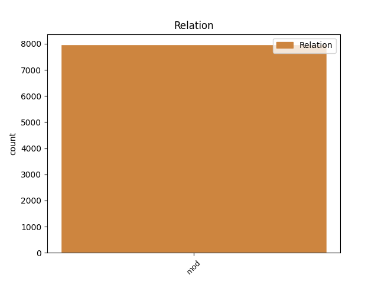
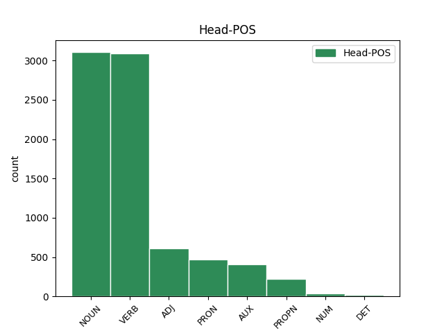
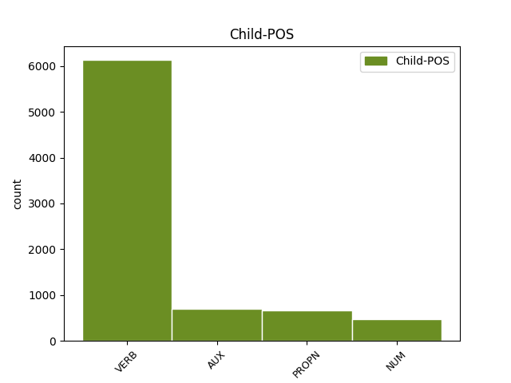

Distribution of features within this leaf



Agreement Rules sorted by frequency.
- When the dependent token is the modifer(mod) of the head token, and the dependent token is VERB.
1 Animadvertendum _ _ _ _ 0 _ _ _
2 est _ _ _ _ 0 _ _ _
3 etiam _ _ _ _ 0 _ _ _
4 quatenus _ _ _ _ 0 _ _ _
5 sermo _ _ _ _ 0 _ _ _
6 delectationem _ _ _ _ 0 _ _ _
7 habeat _ _ _ _ 0 _ _ _
8 et _ _ _ _ 0 _ _ _
9 ut _ _ _ _ 0 _ _ _
10 incipiendi incipio VERB V- Case=Gen|Gender=Masc|Number=Sing|VerbForm=Gdv 11 mod _ ref=1.135
11 ratio ratio NOUN Nb Case=Nom|Gender=Fem|Number=Sing 0 _ _ _
12 fuerit _ _ _ _ 0 _ _ _
13 ita _ _ _ _ 0 _ _ _
14 sit _ _ _ _ 0 _ _ _
15 desinendi _ _ _ _ 0 _ _ _
16 modus _ _ _ _ 0 _ _ _
1 id is PRON Pp Case=Nom|Gender=Neut|Number=Sing|Person=3|PronType=Prs 0 _ _ _
2 enim _ _ _ _ 0 _ _ _
3 maxime _ _ _ _ 0 _ _ _
4 quemque _ _ _ _ 0 _ _ _
5 decet _ _ _ _ 0 _ _ _
6 quod _ _ _ _ 0 _ _ _
7 est sum AUX V- Mood=Ind|Number=Sing|Person=3|Tense=Pres|VerbForm=Fin|Voice=Act 1 mod _ ref=1.113
8 cuiusque _ _ _ _ 0 _ _ _
9 maxime _ _ _ _ 0 _ _ _
10 suum _ _ _ _ 0 _ _ _
1 Uberior _ _ _ _ 0 _ _ _
2 oratio oratio NOUN Nb Case=Nom|Gender=Fem|Number=Sing 0 _ _ _
3 L Lucius PROPN Ne Case=Gen|Gender=Masc|Number=Sing 2 mod _ ref=1.133
4 Crassi _ _ _ _ 0 _ _ _
5 ne _ _ _ _ 0 _ _ _
6 c _ _ _ _ 0 _ _ _
7 minus _ _ _ _ 0 _ _ _
8 faceta _ _ _ _ 0 _ _ _
9 sed _ _ _ _ 0 _ _ _
10 bene _ _ _ _ 0 _ _ _
11 loquendi _ _ _ _ 0 _ _ _
12 de _ _ _ _ 0 _ _ _
13 Catulis _ _ _ _ 0 _ _ _
14 opinio _ _ _ _ 0 _ _ _
15 non _ _ _ _ 0 _ _ _
16 minor _ _ _ _ 0 _ _ _
1 Intellegendum _ _ _ _ 0 _ _ _
2 etiam _ _ _ _ 0 _ _ _
3 est _ _ _ _ 0 _ _ _
4 duabus duo NUM Ma Case=Abl|Gender=Fem|Number=Plur 11 mod _ ref=1.107
5 quasi _ _ _ _ 0 _ _ _
6 nos _ _ _ _ 0 _ _ _
7 a _ _ _ _ 0 _ _ _
8 natura _ _ _ _ 0 _ _ _
9 indutos _ _ _ _ 0 _ _ _
10 esse _ _ _ _ 0 _ _ _
11 personis persona NOUN Nb Case=Abl|Gender=Fem|Number=Plur 0 _ _ _
Disagree Examples:
1 cum _ _ _ _ 0 _ _ _
2 ergo _ _ _ _ 0 _ _ _
3 natus _ _ _ _ 0 _ _ _
4 esset _ _ _ _ 0 _ _ _
5 Iesus _ _ _ _ 0 _ _ _
6 in _ _ _ _ 0 _ _ _
7 Bethleem _ _ _ _ 0 _ _ _
8 Iudaeae _ _ _ _ 0 _ _ _
9 in _ _ _ _ 0 _ _ _
10 diebus dies NOUN Nb Case=Abl|Gender=Fem|Number=Plur 0 _ _ _
11 Herodis Herodes PROPN Ne Case=Gen|Gender=Masc|Number=Sing 10 mod _ ref=MATT_2.1
12 regis _ _ _ _ 0 _ _ _
13 ecce _ _ _ _ 0 _ _ _
14 magi _ _ _ _ 0 _ _ _
15 ab _ _ _ _ 0 _ _ _
16 oriente _ _ _ _ 0 _ _ _
17 venerunt _ _ _ _ 0 _ _ _
18 Hierosolymam _ _ _ _ 0 _ _ _
19 dicentes _ _ _ _ 0 _ _ _
1 tunc _ _ _ _ 0 _ _ _
2 Herodes _ _ _ _ 0 _ _ _
3 clam _ _ _ _ 0 _ _ _
4 vocatis voco VERB V- Aspect=Perf|Case=Abl|Gender=Masc|Number=Plur|Tense=Past|VerbForm=Part|Voice=Pass 7 mod _ ref=MATT_2.7
5 magis _ _ _ _ 0 _ _ _
6 diligenter _ _ _ _ 0 _ _ _
7 didicit disco VERB V- Aspect=Perf|Mood=Ind|Number=Sing|Person=3|Tense=Past|VerbForm=Fin|Voice=Act 0 _ _ _
8 ab _ _ _ _ 0 _ _ _
9 eis _ _ _ _ 0 _ _ _
10 tempus _ _ _ _ 0 _ _ _
11 stellae _ _ _ _ 0 _ _ _
12 quae _ _ _ _ 0 _ _ _
13 apparuit _ _ _ _ 0 _ _ _
14 eis _ _ _ _ 0 _ _ _
1 qui _ _ _ _ 0 _ _ _
2 cum _ _ _ _ 0 _ _ _
3 audissent _ _ _ _ 0 _ _ _
4 regem _ _ _ _ 0 _ _ _
5 abierunt _ _ _ _ 0 _ _ _
6 et _ _ _ _ 0 _ _ _
7 ecce _ _ _ _ 0 _ _ _
8 stella stella NOUN Nb Case=Nom|Gender=Fem|Number=Sing 0 _ _ _
9 quam _ _ _ _ 0 _ _ _
10 viderant video VERB V- Mood=Ind|Number=Plur|Person=3|Tense=Pqp|VerbForm=Fin|Voice=Act 8 mod _ ref=MATT_2.9
11 in _ _ _ _ 0 _ _ _
12 oriente _ _ _ _ 0 _ _ _
13 antecedebat _ _ _ _ 0 _ _ _
14 eos _ _ _ _ 0 _ _ _
15 usque _ _ _ _ 0 _ _ _
16 dum _ _ _ _ 0 _ _ _
17 veniens _ _ _ _ 0 _ _ _
18 staret _ _ _ _ 0 _ _ _
19 supra _ _ _ _ 0 _ _ _
20 ubi _ _ _ _ 0 _ _ _
21 erat _ _ _ _ 0 _ _ _
22 puer _ _ _ _ 0 _ _ _
1 et _ _ _ _ 0 _ _ _
2 responso _ _ _ _ 0 _ _ _
3 accepto accipio VERB V- Aspect=Perf|Case=Abl|Gender=Neut|Number=Sing|Tense=Past|VerbForm=Part|Voice=Pass 14 mod _ ref=MATT_2.12
4 in _ _ _ _ 0 _ _ _
5 somnis _ _ _ _ 0 _ _ _
6 ne _ _ _ _ 0 _ _ _
7 redirent _ _ _ _ 0 _ _ _
8 ad _ _ _ _ 0 _ _ _
9 Herodem _ _ _ _ 0 _ _ _
10 per _ _ _ _ 0 _ _ _
11 aliam _ _ _ _ 0 _ _ _
12 viam _ _ _ _ 0 _ _ _
13 reversi _ _ _ _ 0 _ _ _
14 sunt sum AUX V- Mood=Ind|Number=Plur|Person=3|Tense=Pres|VerbForm=Fin|Voice=Act 0 _ _ _
15 in _ _ _ _ 0 _ _ _
16 regionem _ _ _ _ 0 _ _ _
17 suam _ _ _ _ 0 _ _ _
1 et _ _ _ _ 0 _ _ _
2 admonitus _ _ _ _ 0 _ _ _
3 in _ _ _ _ 0 _ _ _
4 somnis _ _ _ _ 0 _ _ _
5 secessit _ _ _ _ 0 _ _ _
6 in _ _ _ _ 0 _ _ _
7 partes pars NOUN Nb Case=Acc|Gender=Fem|Number=Plur 0 _ _ _
8 Galilaeae Galilaea PROPN Ne Case=Gen|Gender=Fem|Number=Sing 7 mod _ ref=MATT_2.22